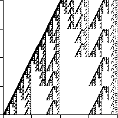

| 11. This fractal consists of |
| 2(1/2)d + 4(1/4)d = 1 |
| Substituting x = (1/2)d yields |
| 4x2 + 2x - 1 = 0 |
| Keeping in mind that x must be positive, we see |
| x = (-2 + sqrt(20))/8 approximately 0.31 |
| So d = Log(x)/Log(1/2), approximately 1.69. |
|  |
Return to Homework 4 Practice.